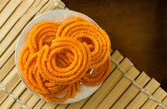
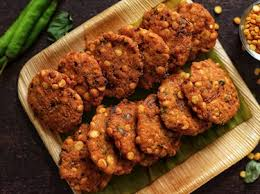

Traditional Indian Snacks
Here You Go
Murukulu
Murukku is a crispy famous Indian snack prepared from rice flour, urad dal, and bean flour
mixed into a spiral-shaped batter and deep-fried in oil.
These savory nibbles are spiced with cumin, onion powder, or chili.
Samosa

Samosa has a crunchy texture and a wide range of tastes. Onions, lentils, spicy potatoes,
peas, or ground meat are the components of these deep-fried triangle pastries.
The renowned golden-brown food should have arrived in India via old trade routes from Central Asia.
Vadalu

Chana dals with various kinds of hot spices are the major ingredients of a traditional Masala Vada.
Anyone could be enticed by the aroma emanating from your kitchen corner.